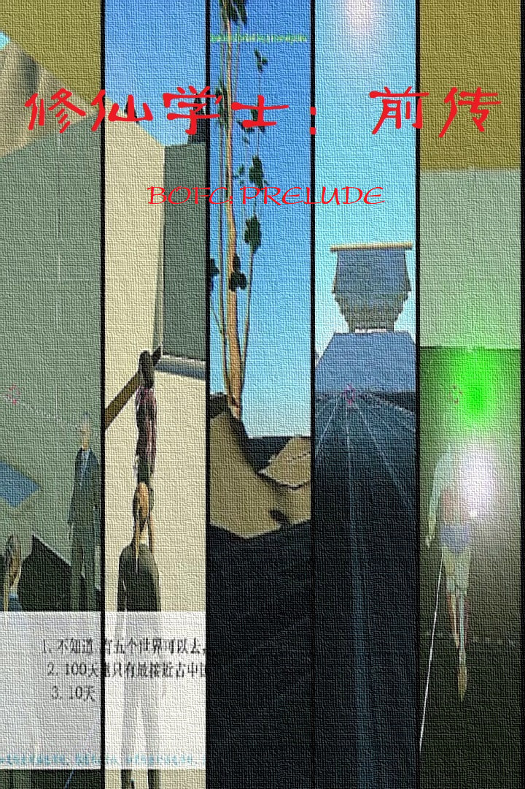
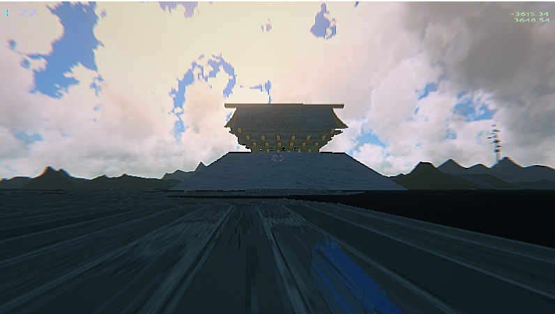
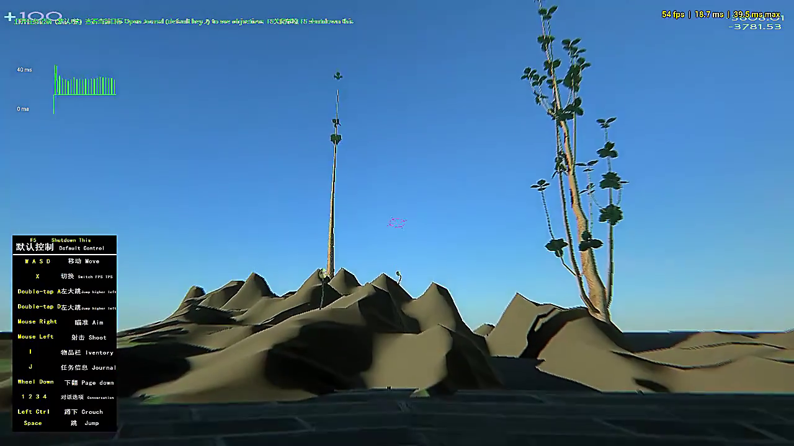
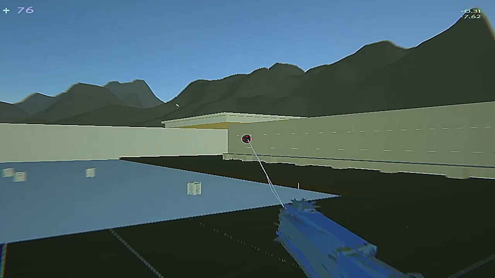

---An attempt to generate virtual worlds with Python and Artificial
Intelligence.
---一个使用Python和人工智能生成虚拟世界的尝试。
A 3D game with dialog support, items drop system and basic shooting
systems is created. We call it BOFC: A prelude. Its open version can
be downloaded at:
以及使用Python编写了一个3D游戏，具有完整的NPC对话功能和基础的射击武器和物品掉落系统。游戏名称称为《修仙学士：前传》，开放版本
在以下位置：
https://github.com/sbxzy/BOFC0
In system previews:
效果演示：

A simple video:
动态演示：
https://www.bilibili.com/video/BV1Ef4y197QW
In the next game, vehicles and maze systems will be added.
下一个版本中将加入载具和迷宫解密系统。